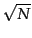
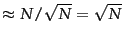
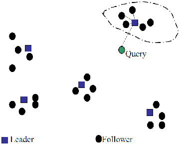
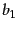
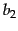
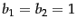
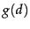
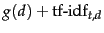
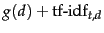
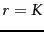

Next:
Components of an information
Up:
Efficient scoring and ranking
Previous:
Impact ordering
Contents
Index
Cluster pruning
In
cluster pruning we have a preprocessing step during which we cluster the document vectors. Then at query time, we consider only documents in a small number of clusters as candidates for which we compute cosine scores. Specifically, the preprocessing step is as follows:
- Pick  documents at random from the collection. Call these leaders.
- For each document that is not a leader, we compute its nearest leader.
We refer to documents that are not leaders as
followers. Intuitively, in the partition of the followers induced by the use of
randomly chosen leaders, the expected number of followers for each leader is
. Next, query processing proceeds as follows:
- Given a query
 , find the leader that is closest to . This entails computing cosine similarities from to each of the leaders.
, find the leader that is closest to . This entails computing cosine similarities from to each of the leaders.
- The candidate set
 consists of together with its followers. We compute the cosine scores for all documents in this candidate set.
consists of together with its followers. We compute the cosine scores for all documents in this candidate set.
The use of randomly chosen leaders for clustering is fast and likely to reflect the distribution of the document vectors in the vector space: a region of the vector space that is dense in documents is likely to produce multiple leaders and thus a finer partition into sub-regions. This illustrated in Figure 7.3 .
Figure 7.3: Cluster pruning.
|  |
Variations of cluster pruning introduce additional parameters  and , both of which are positive integers. In the pre-processing step we attach each follower to its closest leaders, rather than a single closest leader. At query time we consider the leaders closest to the query . Clearly, the basic scheme above corresponds to the case . Further, increasing or increases the likelihood of finding  documents that are more likely to be in the set of true top-scoring documents, at the expense of more computation. We reiterate this approach when describing clustering in Chapter 16 (page 16.1 ).
documents that are more likely to be in the set of true top-scoring documents, at the expense of more computation. We reiterate this approach when describing clustering in Chapter 16 (page 16.1 ).
Exercises.
- We suggested above (Figure 7.2 ) that the postings for static quality ordering be in decreasing order of . Why do we use the decreasing rather than the increasing order?
- When discussing champion lists, we simply used the
 documents with the largest tf values to create the champion list for
documents with the largest tf values to create the champion list for  . But when considering global champion lists, we used idf as well, identifying documents with the largest values of
. Why do we differentiate between these two cases?
. But when considering global champion lists, we used idf as well, identifying documents with the largest values of
. Why do we differentiate between these two cases?
- If we were to only have one-term queries, explain why the use of global champion lists with  suffices for identifying the highest scoring documents. What is a simple modification to this idea if we were to only have -term queries for any fixed integer ?
- Explain how the common global ordering by values in all high and low lists helps make the score computation efficient.
- Consider again the data of Exercise 6.4.4 with nnn.atc for the query-dependent scoring. Suppose that we were given static quality scores of 1 for Doc1 and 2 for Doc2. Determine under Equation 35 what ranges of static quality score for Doc3 result in it being the first, second or third result for the query best car insurance.
- Sketch the frequency-ordered postings for the data in Figure 6.9 .
- Let the static quality scores for Doc1, Doc2 and Doc3 in Figure 6.11 be respectively 0.25, 0.5 and 1. Sketch the postings for impact ordering when each postings list is ordered by the sum of the static quality score and the Euclidean normalized tf values in Figure 6.11 .
- The nearest-neighbor problem in the plane is the following: given a set of
 data points on the plane, we preprocess them into some data structure such that, given a query point , we seek the point in that is closest to in Euclidean distance. Clearly cluster pruning can be used as an approach to the nearest-neighbor problem in the plane, if we wished to avoid computing the distance from to every one of the query points. Devise a simple example on the plane so that with two leaders, the answer returned by cluster pruning is incorrect (it is not the data point closest to ).
data points on the plane, we preprocess them into some data structure such that, given a query point , we seek the point in that is closest to in Euclidean distance. Clearly cluster pruning can be used as an approach to the nearest-neighbor problem in the plane, if we wished to avoid computing the distance from to every one of the query points. Devise a simple example on the plane so that with two leaders, the answer returned by cluster pruning is incorrect (it is not the data point closest to ).
Next:
Components of an information
Up:
Efficient scoring and ranking
Previous:
Impact ordering
Contents
Index
© 2008 Cambridge University Press
This is an automatically generated page. In case of formatting errors you may want to look at the PDF edition of the book.
2009-04-07